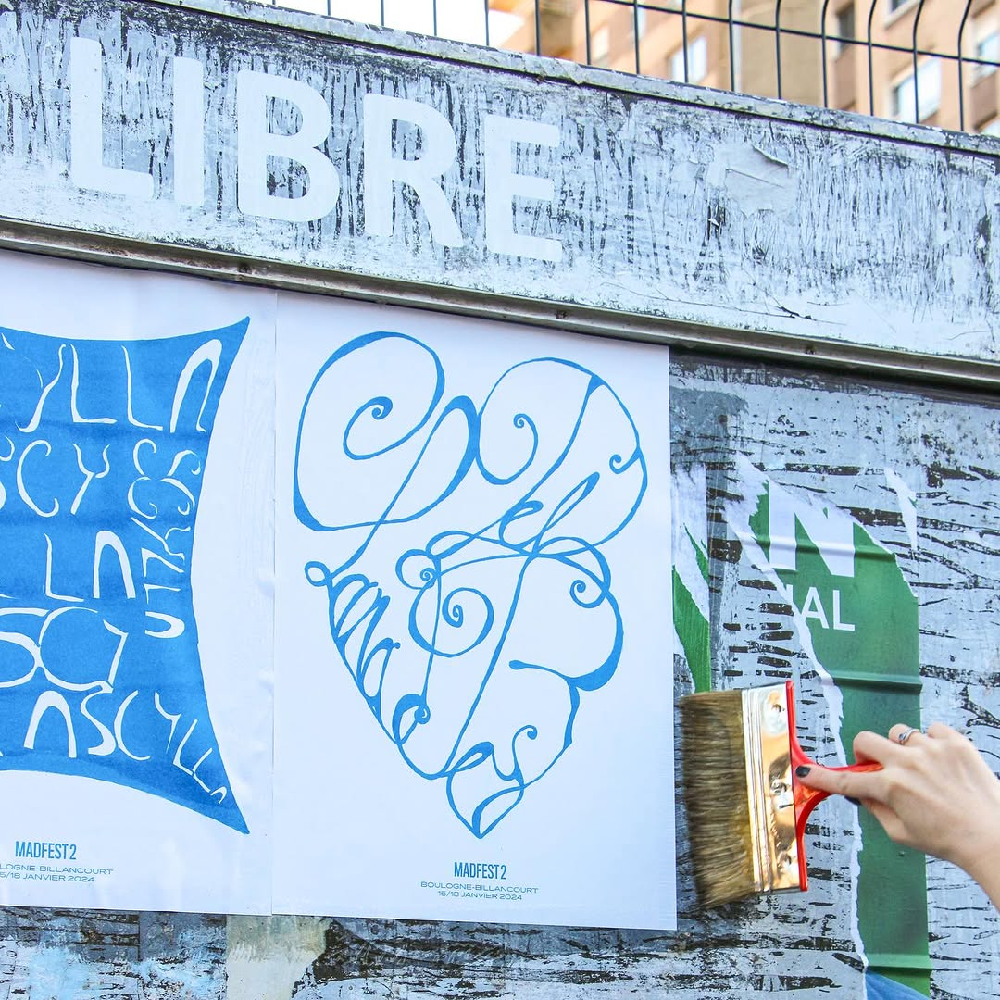
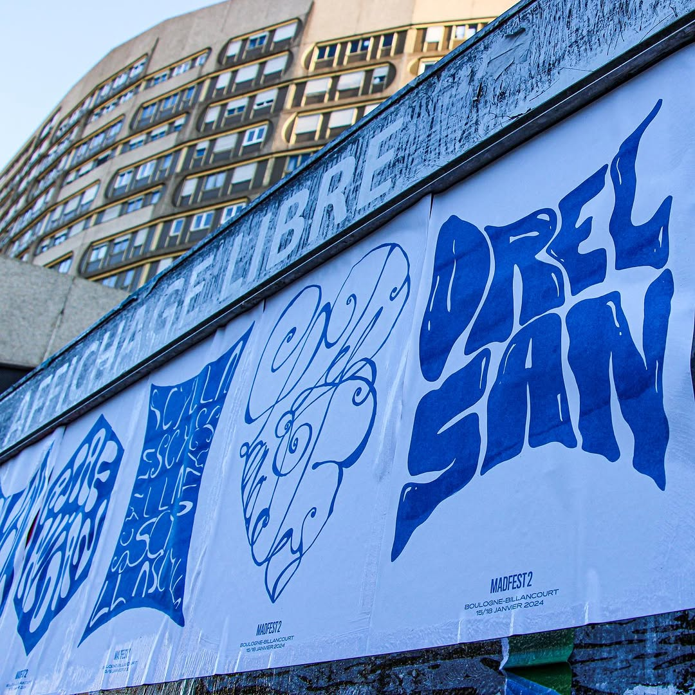
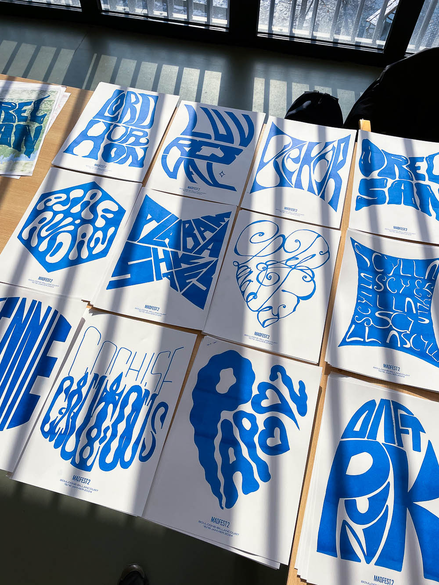

MADFEST
experimentation with typographic posters in the context of the second edition of the fictional music festival Madfest.
designed and displayed as part of a workshop led by graphic designer Robin Abreu.
printing: Risography
artist: Lana Del Rey



